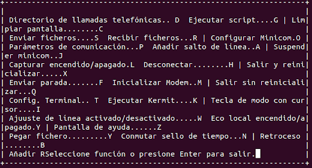
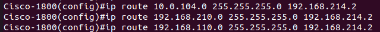
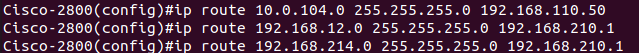

DOCUMENTACIÓN
- CONFIGURACIÓN GENERAL
- CONFIGURACION CISCO 1841
- CONFIGURACION CISCO 2801
- TESTEO DE RED
- BIBLIOGRAFIA
Para realizar el proyecto hemos uttilizado un Cisco 1841 y 2801, los cuales hemos tenido que formatear y configurar a nuestra manera, y esto lo hemos realizado de la siguiente manera.
Routers de fabrica
Para poner los routers de fabrica hemos seguido una seria de pasos.
Primero que todo hemos ejecutado minicom y mientras se encuentra conectando con el routers hemos pulsado la combinación de ctrl+a+z y saldria la siguiente ventana

Una vez llegada a esa parte pulsamos la F y entramos en el modo rommon. En este modo debemos poner la siguiente linea y al reiniciar la maquina estara de fabrica.
monitor: command "boot" aborted due to user interrupt
rommon 1 > confreg 0x2142
Configuración comun
Una vez tenemos los routers de fabrica lo que haremos sera cambiar el hostname y la contraseña del router, además de añadir una linea sobre domain. Con esto ya configurado, solo nos quedaba guardarlo de la siguiente manera.
Cisco-1800#copy running-config nvram
Destination filename [nvram]? cisco1800
%Warning:There is a file already existing with this name
Do you want to over write? [confirm]
827 bytes copied in 1.104 secs (749 bytes/sec)
La configuración especial que tuvo el cisco 1841 en comparación al 2801 es la siguiente
Cicos-1800(config)#interface FastEthernet0/0
Cicos-1800(config-if)#ip address 192.168.12.214 255.255.255.0
Cicos-1800(config-if)#no shutdown
Cicos-1800(config-if)#exit
Cicos-1800(config)#interface FastEthernet0/1
Cicos-1800(config-if)#ip address 192.168.214.1 255.255.255.0
Cicos-1800(config-if)#no shutdown
Cicos-1800(config-if)#exit
Cicos-1800(config)#
Cicos-1800(config)#
Cicos-1800(config)#
La configuración especial que tuvo el cisco 2801 en comparación al 1841 es la siguiente
Cicos-2800(config)#interface FastEthernet0/0
Cicos-2800(config-if)#ip address 192.168.210.2 255.255.255.0
Cicos-2800(config-if)#no shutdown
Cicos-2800(config-if)#exit
Cicos-2800(config)#interface FastEthernet0/1
Cicos-2800(config-if)#ip address 192.168.110.1 255.255.255.0
Cicos-2800(config-if)#no shutdown
Cicos-2800(config-if)#exit
Cicos-2800(config)#
Cicos-2800(config)#
Cicos-2800(config)#
